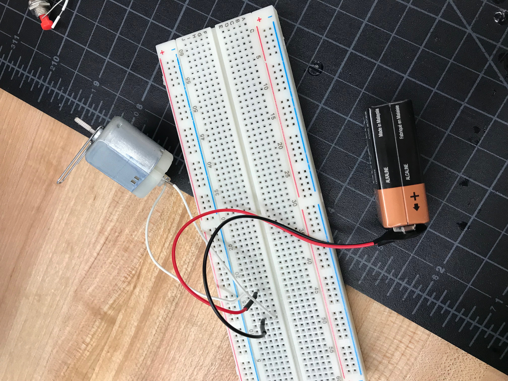
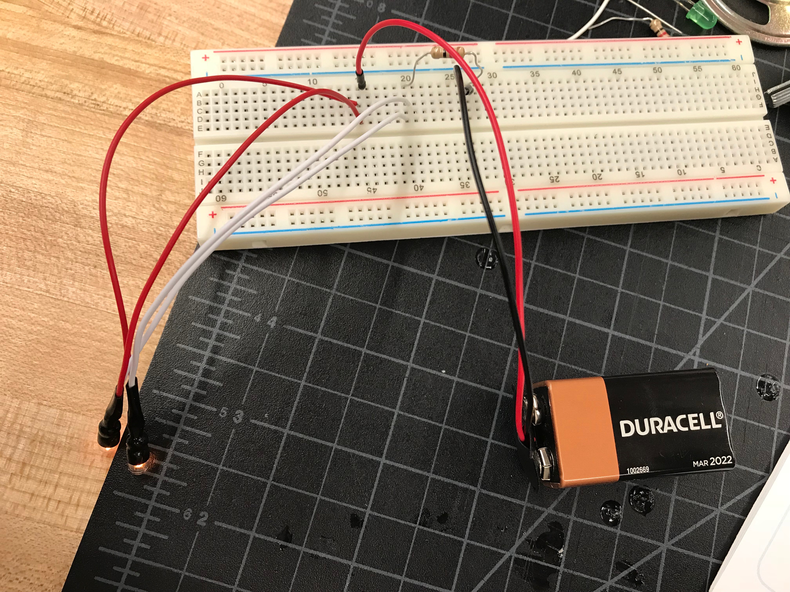
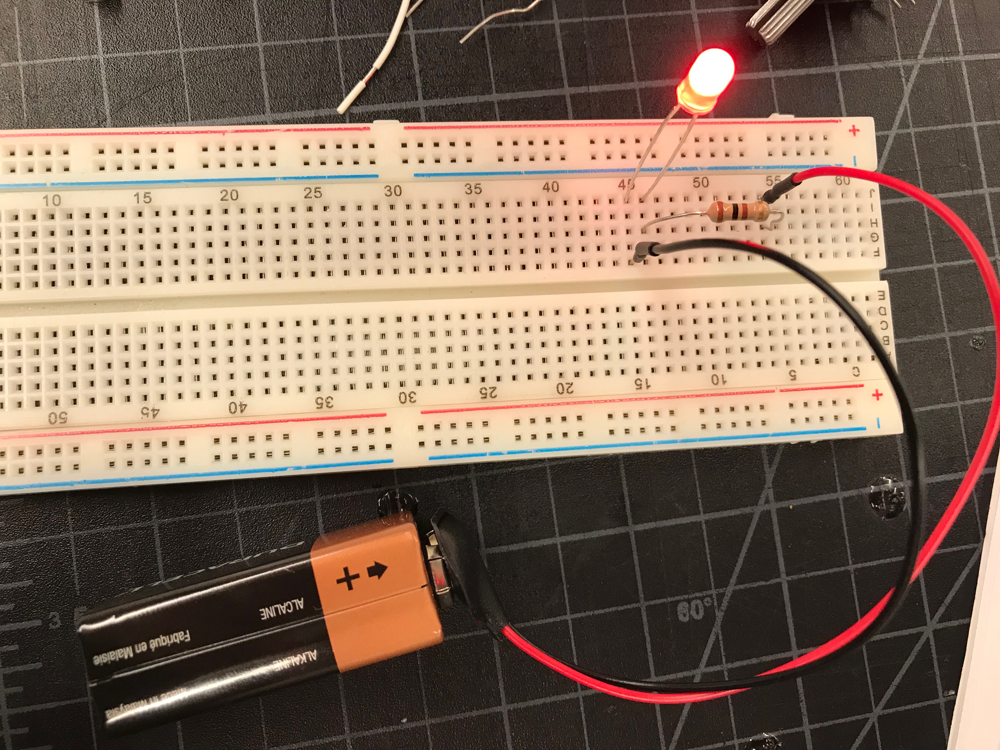
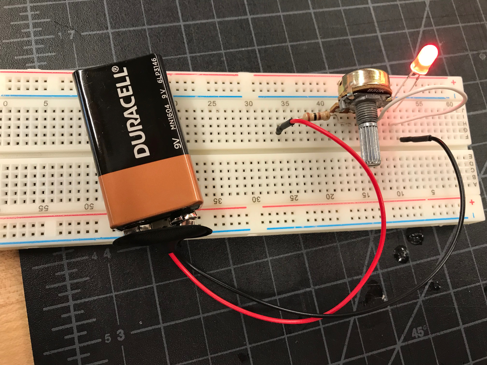
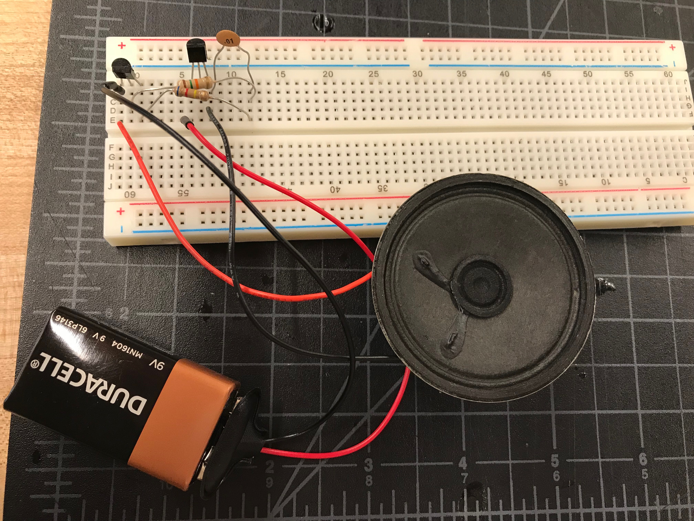
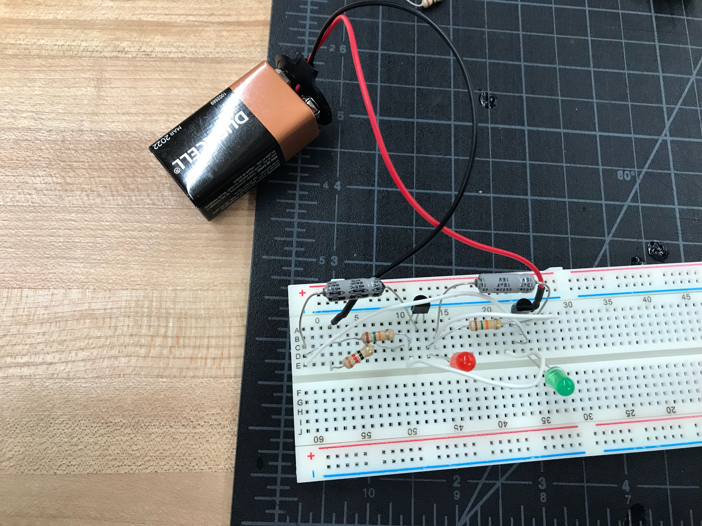
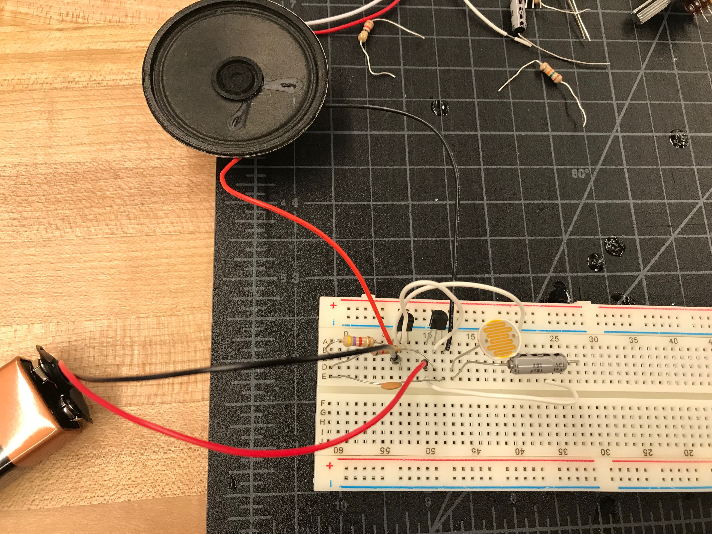
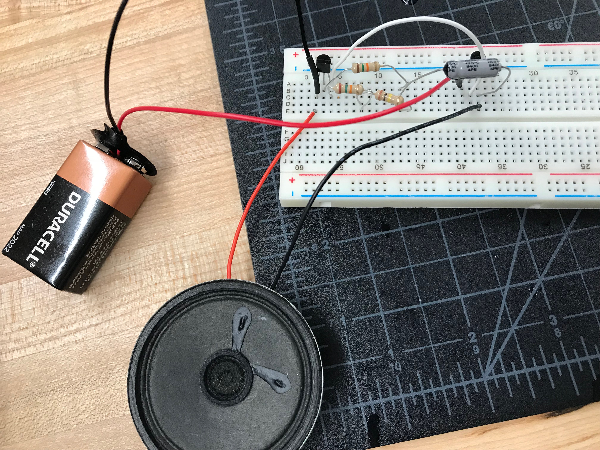
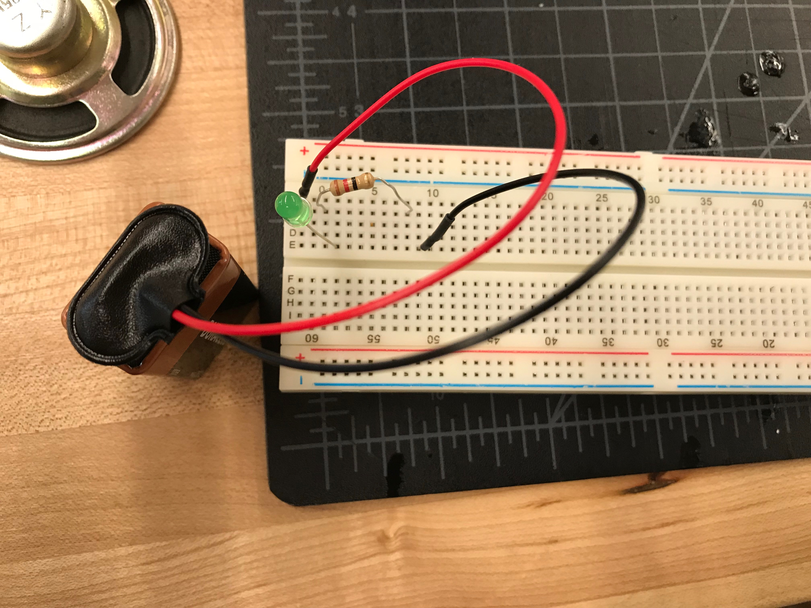
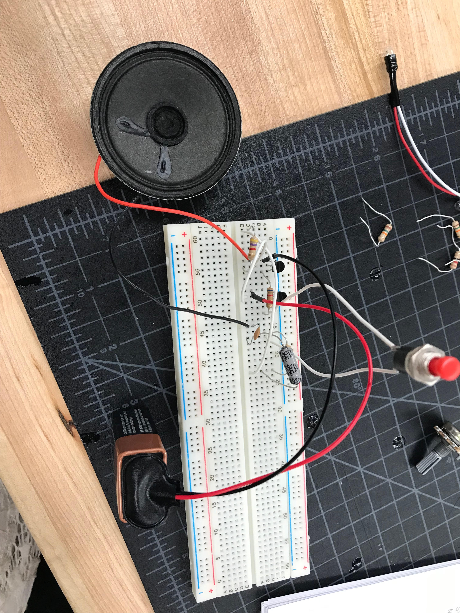

The first project of this rotation was to solder two things. I chose to solder a sound to light kit and a six LED chaser kit. I have previously soldered before in history class so it was not new to me. My chaser kit worked but my sound to light kit did not work, like many other peoples in the class.
The second thing we did this rotation was electronic circuts. This was a process of inserting wires and parts into the bread board to connect and make circuts of the examples in a book.









